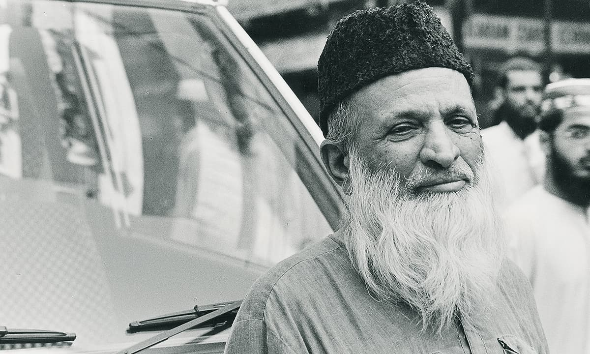

The Beginning
Abdul Sattar Edhi was born in Bantva, Gujarat, and grew up with strong values of kindness and helping others.
A LEGACY OF HUMANITY
A humanitarian who dedicated his life to serving people in need.

Abdul Sattar Edhi was born in Bantva, Gujarat, and grew up with strong values of kindness and helping others.
He purchased his first small ambulance and began providing emergency assistance to people who had nowhere else to turn.
His humanitarian efforts expanded into a growing network of shelters, clinics, ambulances and welfare services.
Edhi's humanitarian work gained international recognition as his organization continued helping people regardless of their background.
Even in his later years, Edhi remained committed to his simple philosophy: serve humanity without discrimination.
Abdul Sattar Edhi passed away at the age of 88, leaving behind a humanitarian legacy that continues through the Edhi Foundation.
"No religion is higher than humanity."
— Abdul Sattar Edhi